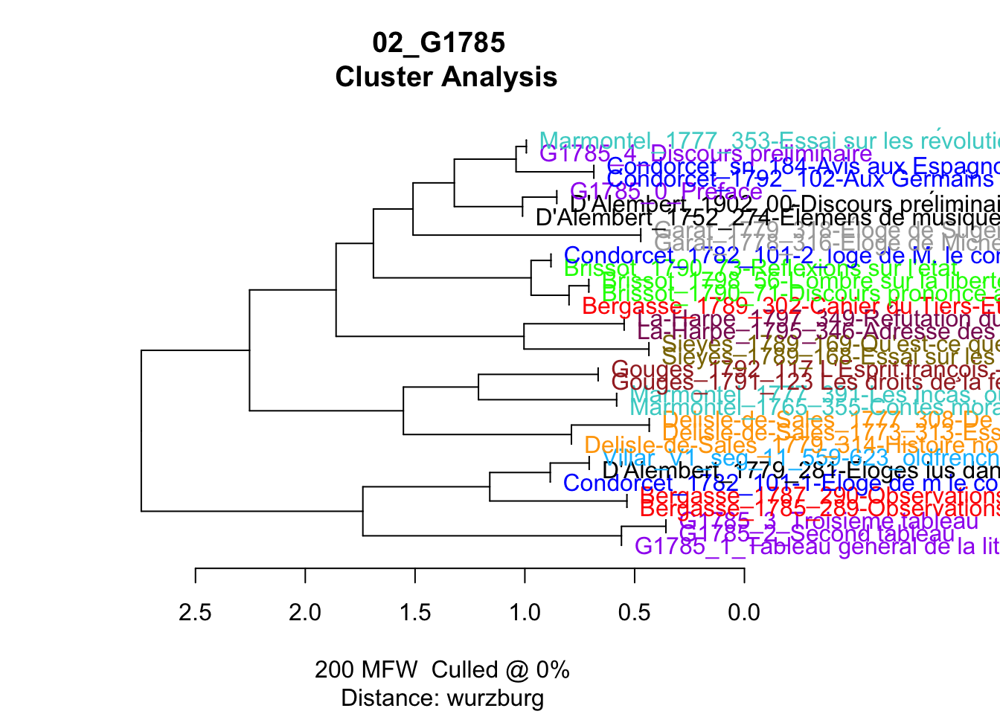
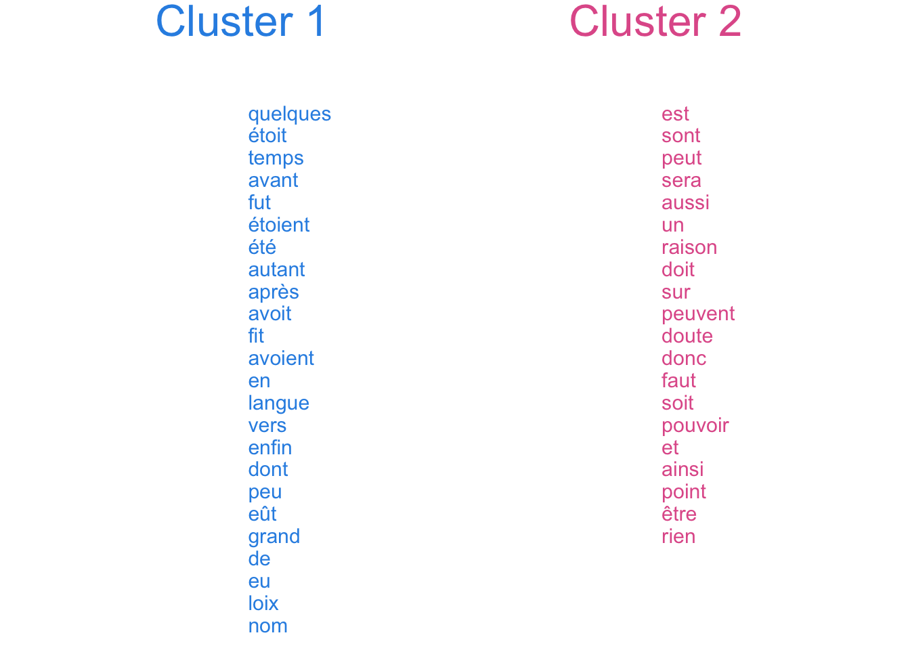
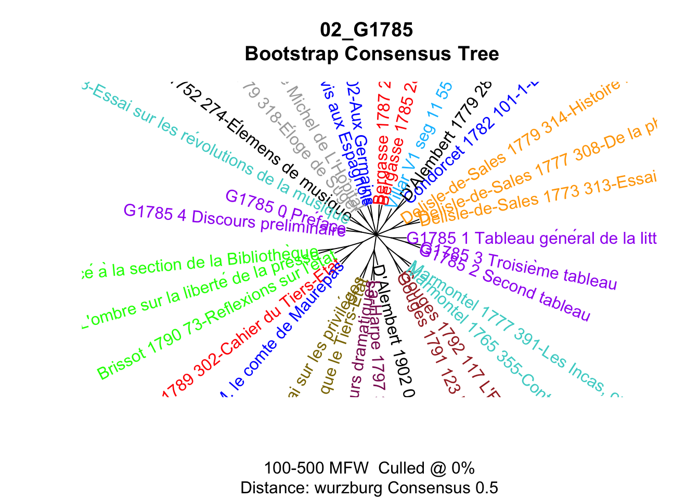
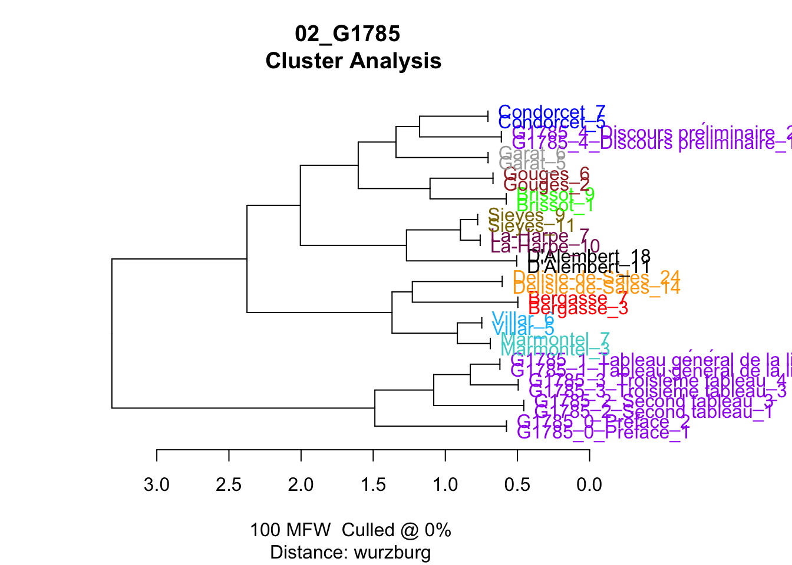
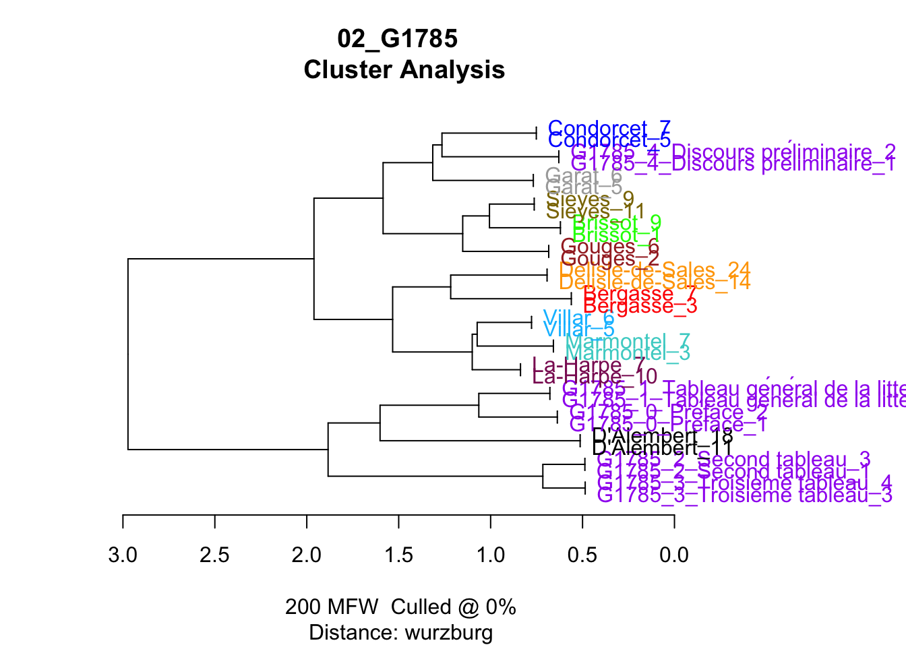
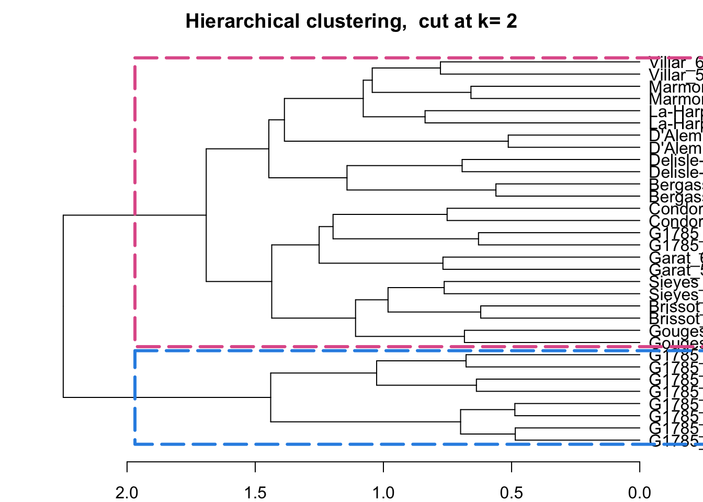
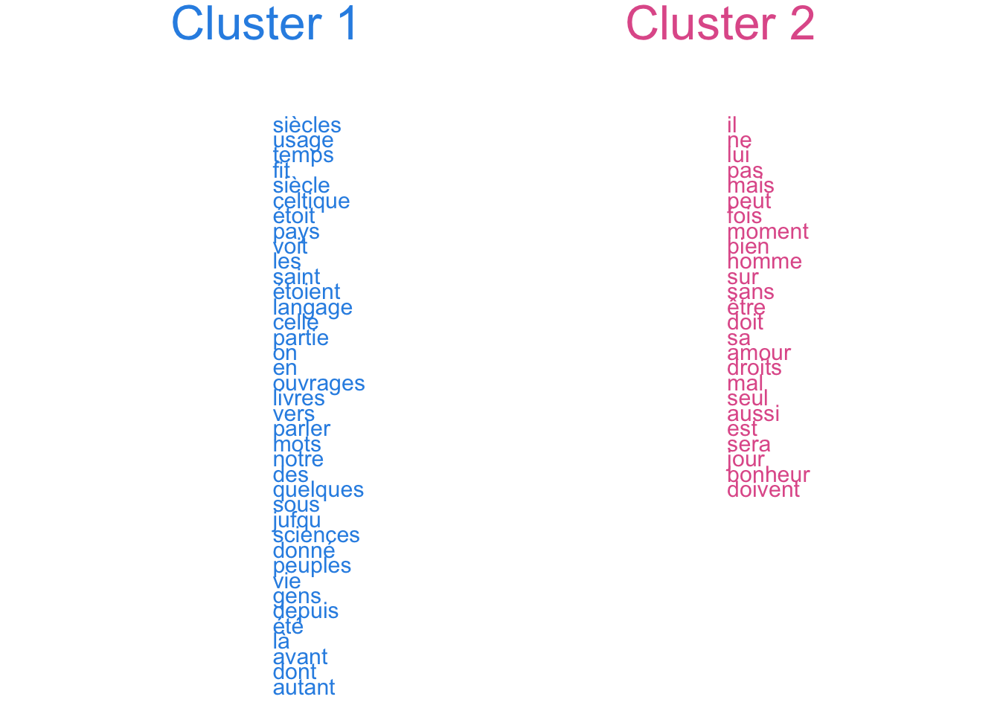
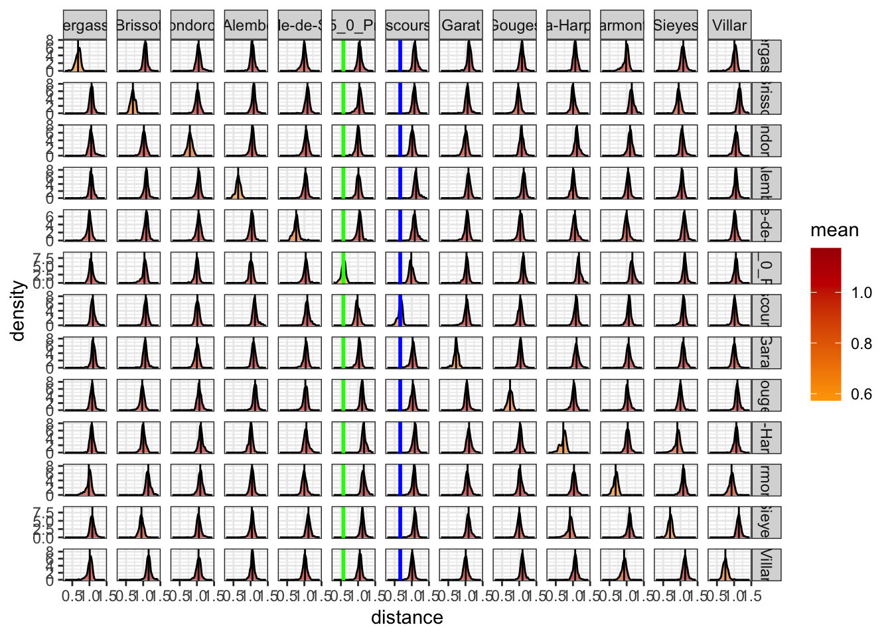

library(tidyverse)
library(tidytext)
library(stylo)
library(seetrees)
set.seed(1234)02_G1785
Authorship of the introductory texts in Galerie 1785
load packages
Quick book-based exploration
write data
fh <- list.files(path = "../../corpus_texts/", full.names = T)
corpus <- tibble(
path = fh,
text = sapply(path, read_file),
id = str_remove_all(path, "\\.\\./\\.\\./corpus_texts//|\\.txt"),
path_new = str_remove_all(path, "^\\.\\./\\.\\./")
) %>%
filter(!str_detect(id, "^G1787")) # remove texts from 1787 volumes
glimpse(corpus)Write texts for easier stylo use
for (i in 1:nrow(corpus)) {
write_file(corpus$text[i], file = corpus$path_new[i])
}stylo - quick tests
200 mfw
test_00 <- stylo(
gui = F,
corpus.dir = "corpus_texts/", # given that texts are already created
corpus.lang = "Other",
analysed.features = "w",
mfw.min = 200,
mfw.max = 200,
distance.measure = "wurzburg"
)using current directory...Performing no sampling (using entire text as sample)slicing input text into tokens...
turning words into features, e.g. char n-grams (if applicable)...Total nr. of samples in the corpus: 33The corpus consists of 708978 tokensprocessing 33 text samples...
combining frequencies into a table...
culling @ 0 available features (words) 5000
Calculating z-scores...
MFW used:
200
Processing metadata...
Assigning plot colors according to file names...

view_tree(test_00, k = 2, label_size = 4)

bootstrap
bct <- stylo(
gui = F,
mfw.min = 100,
mfw.max = 500,
mfw.incr = 1,
analysed.features = "w",
ngram.size = 1,
analysis.type = "BCT",
consensus.strength = 0.5,
distance.measure = "wurzburg",
corpus.dir = "corpus_texts/",
corpus.lang = "Other"
)
rm(bct, test_00, corpus, fh)Warning in rm(bct, test_00, corpus, fh): object 'corpus' not foundWarning in rm(bct, test_00, corpus, fh): object 'fh' not foundRemove words
Filter out topic-related words
glimpse(corpus)Rows: 16
Columns: 3
$ path <chr> "corpus_authors//Bergasse.txt", "corpus_authors//Brissot.txt", …
$ text <chr> "pauvres ils apprendra pas les au enseignement ment action pui …
$ author <chr> "Bergasse", "Brissot", "Condorcet", "D'Alembert", "Delisle-de-S…Select words based on the features above
signal_words <- paste0(c("^langue", "^latin", "^fut", "liberté",
"^gaule", "^lettre", "^hui$",
"^gaulois", "^language", "^ainfi", "^ainsi",
"^louis$", "^mesmer$", "frédéric",
"^génie",
"^loi","^ancien", "^roi$",
"^liberté$", "^france$", "^francois",
"^je$", "^ma$", "^mon$", "^moi$",
"^vous$", "^vos$", "^votre$"
),
collapse = "|"
)Write 1 text = 1 row
corpus_filtered <- corpus %>%
unnest_tokens(input = text, output = word, token = "words") %>%
mutate(word = str_replace_all(word, "^ufage$", "usage"),
word = str_replace_all(word, "^fiècle", "siècle")) %>%
filter(!str_detect(word, signal_words))Warning: Outer names are only allowed for unnamed scalar atomic inputsn tokens after filter
nrow(corpus_filtered)[1] 323687corpus_filtered %>%
count(author, sort = T)# A tibble: 16 × 2
author n
<chr> <int>
1 Delisle-de-Sales 44144
2 D'Alembert 39149
3 Marmontel 36079
4 Condorcet 29305
5 Garat 24732
6 Sieyes 24361
7 Bergasse 23169
8 La-Harpe 22181
9 Brissot 19376
10 G1785_1_Tableau général de la littérature 13101
11 Villar 12016
12 Gouges 10962
13 G1785_3_Troisième tableau 8037
14 G1785_0_Préface 7438
15 G1785_2_Second tableau 6010
16 G1785_4_Discours préliminaire 3627corpus_filtered %>%
filter(word == "ufage")# A tibble: 0 × 3
# ℹ 3 variables: path <chr>, author <chr>, word <chr>corpus_filtered <- corpus_filtered %>%
group_by(author) %>%
mutate(text = paste(word, collapse = " ")) %>%
ungroup() %>%
select(-word) %>%
distinct()
glimpse(corpus_filtered)Rows: 16
Columns: 3
$ path <chr> "corpus_authors//Bergasse.txt", "corpus_authors//Brissot.txt", …
$ author <chr> "Bergasse", "Brissot", "Condorcet", "D'Alembert", "Delisle-de-S…
$ text <chr> "pauvres ils apprendra pas les au enseignement ment action pui …sampling
sample_independent(corpus = corpus_filtered,
sample_size = 1800,
n_samples = 2)Warning in dir.create(folder): 'corpus_samples_dump' already existstests
100 mfw
test_filtered_100 <- stylo(
gui = F,
mfw.min = 100,
mfw.max = 100,
analyzed.features = "w",
distance.measure = "wurzburg",
corpus.dir = "corpus_samples_dump/",
corpus.lang = "Other"
)
test_filtered_200 <- stylo(
gui = F,
mfw.min = 200,
mfw.max = 200,
analyzed.features = "w",
distance.measure = "wurzburg",
corpus.dir = "corpus_samples_dump/",
corpus.lang = "Other"
)
view_tree(test_filtered_200, k = 2, label_size = 4)

test_filtered_200$features.actually.used
------------------------------------------------
features (e.g. frequent words) actually analyzed
------------------------------------------------
[1] de la les le des que
[7] en il qui qu un dans
[13] est on ne du pour plus
[19] une ce et par pas se
[25] nous au ils mais cette sur
[31] leur son même ces ses si
[37] sont tout elle lui tous ou
[43] avec sa comme être ont étoit
[49] aux leurs sans peut dont fait
[55] encore point où bien faire nos
[61] hommes homme temps autres été moins
[67] ceux avoit doit toutes avoir me
[73] après cet peuple sous toujours autre
[79] deux grand donc faut notre toute
[85] françois nation celle ni ai depuis
[91] dire eux là peu alors rien
[97] trop siècle tant celui elles étoient
[103] nature quelques ii jamais parce quelque
[109] société dit nombre contre grande soit
[115] entre quand sciences sera voir vie
[121] mêmes seroit avoient esprit sol vers
[127] donner enfin premier fois monde nom
[133] droit peuples principes jour mieux mots
[139] non usage arts pouvoir très amour
[145] car langage parler partie vérité beaucoup
[151] état gens pu public saint aucun
[157] avant force grands ici mes trois
[163] autant doute eu moment seul tems
[169] donné long pays rendre bonheur citoyens
[175] fit ouvrages publique siècles aussi avons
[181] cela celtique intérêt livres mi ouvrage
[187] aujourd auroit cependant doivent droits furent
[193] mal premiers veut voit ans genre
[199] goût jufqu
(total number of elements: 200)test_filtered_bct <- stylo(
gui=F,
mfw.min=50,
mfw.max=200,
mfw.incr = 1,
analyzed.features = "w",
ngram.size = 1,
analysis.type = "BCT",
consensus.strength = 0.5,
distance.measure = "wurzburg",
corpus.dir="corpus_samples_dump/",
corpus.lang="Other"
)
Distribution of distances
Replication from navalny.R https://github.com/perechen/navalny_R/blob/main/stylometry_navalny.md
functions
### function to process distance table
process_distances <- function(stylo_res) {
dt <- stylo_res %>% as.matrix()
d_long <- dt %>%
as_tibble() %>%
mutate(source=colnames(dt)) %>%
pivot_longer(1:nrow(dt),names_to="target",values_to ="distance") %>%
mutate(source=str_remove(source, "_[0-9]*$"),
target=str_remove(target, "_[0-9]*$")) %>%
filter(distance != 0)
return(d_long)
}
## function to plot distance distributions
plot_distances <- function(df) {
df %>%
ggplot(aes(distance,fill=mean)) +
geom_density(alpha=0.6) +
geom_vline(aes(xintercept=mean)) +
facet_grid(source ~ target,scales = "free_y") +
theme_bw() +
scale_fill_gradient2(high=lannister[1],
mid=lannister[3],
low=lannister[5],
midpoint=1.05)
}sampling
function
sample_independent_opt <- function(tokenized_df,
n_samples,
sample_size,
text_var="word",
folder="corpus_sampled_opt/",
overwrite=T) {
dir.create(folder)
if(overwrite) {
do.call(file.remove, list(list.files(folder, full.names = TRUE)))
}
shuff <- tokenized_df %>%
group_by(author) %>%
sample_n(n_samples*sample_size) %>%
mutate(sample=sample(rep(1:n_samples, each=sample_size))) %>%
unite(sample_id,c(author,sample),remove = F) %>%
group_by(sample_id) %>%
summarize(text=paste(!!sym(text_var), collapse=" "))
for(i in 1:nrow(shuff)) {
write_file(file=paste0(folder, shuff$sample_id[i],".txt"), shuff$text[i])
}
}glimpse(corpus)Rows: 16
Columns: 3
$ path <chr> "corpus_authors//Bergasse.txt", "corpus_authors//Brissot.txt", …
$ text <chr> "pauvres ils apprendra pas les au enseignement ment action pui …
$ author <chr> "Bergasse", "Brissot", "Condorcet", "D'Alembert", "Delisle-de-S…corpus %>% filter(str_detect(author, "G1785")) %>% pull(author) %>% unique[1] "G1785_0_Préface"
[2] "G1785_1_Tableau général de la littérature"
[3] "G1785_2_Second tableau"
[4] "G1785_3_Troisième tableau"
[5] "G1785_4_Discours préliminaire" # filter only Preface & Discours prelim text in question
removed_texts <- paste0(c("G1785_1", "G1785_2", "G1785_3"), collapse = "|")
corpus_t <- corpus %>%
filter(!str_detect(author, removed_texts)) %>%
unnest_tokens(input = text, output = word, token = "words")Warning: Outer names are only allowed for unnamed scalar atomic inputshead(corpus_t)# A tibble: 6 × 3
path author word
<chr> <chr> <chr>
1 corpus_authors//Bergasse.txt Bergasse pauvres
2 corpus_authors//Bergasse.txt Bergasse ils
3 corpus_authors//Bergasse.txt Bergasse apprendra
4 corpus_authors//Bergasse.txt Bergasse pas
5 corpus_authors//Bergasse.txt Bergasse les
6 corpus_authors//Bergasse.txt Bergasse au dist iterations
Settings
iters <- 100
min_features <- 50
max_features <- 500
d_res_w <- vector(mode = "list",
length = iters)for (i in 1:iters) {
mfw <- sample(seq(min_features,max_features, by=10),1)
sample_independent_opt(corpus_t,
sample_size=1800,
text_var = "word",
n_samples = 2)
tokenised_texts <- load.corpus.and.parse(files = list.files(
path = "corpus_sampled_opt/", full.names = T)
)
features <- make.frequency.list(tokenised_texts, head = 2000)
data <- make.table.of.frequencies(tokenised_texts,
features,
relative = TRUE)[,1:mfw]
s_words <- str_detect(colnames(data), signal_words)
data <- data[, !s_words]
rownames(data) <- str_remove_all(rownames(data), "^.*?//")
dt <- dist.wurzburg(data) %>% as.dist(upper = T, diag = T)
d_long <- process_distances(dt)
d_res_w[[i]] <- d_long
}
saveRDS(d_res_w,file="d_res_w.rds")lannister = c("#5C0000", "#890000", "#C50000", "#FB7E00", "#FFA700")
d_df <- d_res_w %>%
bind_rows() %>%
group_by(source, target) %>%
mutate(mean = mean(distance))
head(d_df)# A tibble: 6 × 4
# Groups: source, target [4]
source target distance mean
<chr> <chr> <dbl> <dbl>
1 Bergasse Bergasse 0.661 0.668
2 Bergasse Brissot 1.07 1.06
3 Bergasse Brissot 1.01 1.06
4 Bergasse Condorcet 1.05 1.05
5 Bergasse Condorcet 1.02 1.05
6 Bergasse D'Alembert 1.09 1.05 Select mean pointer
unique(d_df$target) [1] "Bergasse" "Brissot"
[3] "Condorcet" "D'Alembert"
[5] "Delisle-de-Sales" "G1785_0_Préface"
[7] "G1785_4_Discours préliminaire" "Garat"
[9] "Gouges" "La-Harpe"
[11] "Marmontel" "Sieyes"
[13] "Villar" x <- unique(d_df$target)[6]
y <- unique(d_df$target)[7]
selected_mean_x <- d_df %>%
filter(source == x & target == x) %>%
pull(mean) %>% unique()
selected_mean_y <- d_df %>%
filter(source == y & target == y) %>%
pull(mean) %>% unique()d_df %>%
plot_distances() +
geom_vline(data=. %>% filter(target==x),
aes(xintercept=selected_mean_x),
color="green",
linewidth=1) +
geom_vline(data=. %>% filter(target==y),
aes(xintercept=selected_mean_y),
color="blue",
linewidth=1)